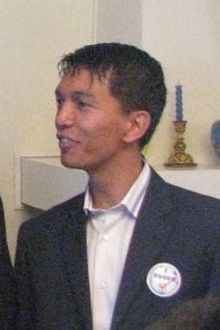

Andry Rajoelina
| Andry Rajoelina | |
| 
|
|
| Mandats | |
|---|---|
| Président de la Transition de la République de Madagascar | |
| Actuellement en fonction | |
| Depuis le 9 août 2009 | |
| Premier ministre | Roindefo Monja Eugène Mangalaza Cécile Manorohanta (intérim) Albert-Camille Vital |
| Prédécesseur | lui-même (Président de la haute autorité de la transition) |
| Président de la haute autorité de transition de la République de Madagascar | |
| 17 mars 2009 – 9 août 2009 | |
| Premier ministre | Roindefo Monja |
| Prédécesseur | Marc Ravalomanana (Président de la République) |
| Maire d´Antananarivo | |
| 12 décembre 2007 – 3 février 2009 | |
| Prédécesseur | Patrick Ramiaramanana |
| Successeur | Michèle Ratsivalaka |
| Biographie | |
| Nom de naissance | Andry Nirina Rajoelina |
| Date de naissance | 30 mai 1974 [1] |
| Lieu de naissance | |
| Nationalité | malgache |
| Parti politique | Tanora malaGasy Vonona |
| Conjoint | Mialy Razakandisa |
| Profession | Disc jockey Entrepreneur |
| Résidence | Palais d'État d'Ambohitsorohitra |
 |
|
| Chefs d'État malgaches | |
| modifier |
|
{kind=link}
Andry Nirina Rajoelina ['andʐʲ radz'welna] ou plus simplement Andry Rajoelina, né le 30 mai 1974[1], est un homme d'affaires et homme politique malgache.
Il est maire de la commune urbaine d'Antananarivo du 12 décembre 2007 au 3 février 2009 avant de transmettre sa fonction à son adjointe Michelle Ratsivalaka, qui est elle-même destituée par le conseil municipal le 16 juillet 2009[2] et remplacée par l'homme d'affaires Edgard Razafindravahy[3].
En mars 2009, il renverse le président démocratiquement élu Marc Ravalomanana avec l'appui d'une partie de l'armée. Il devient alors président de la Haute Autorité de la transition (HAT).
Malgré la signature d'accords de partage de pouvoir de Maputo sous médiation internationale, Rajoelina limoge le Premier Ministre de consensus et impose son gouvernement dirigé par Camille Vital.
Sommaire[masquer] |
Biographie[modifier]
Ses débuts dans le monde de la publicité[modifier]
Andry Nirina Rajoelina est né le 30 mai 1974 au sein de l'ethnie merina de Madagascar. Son père, le colonel Roger Yves Rajoelina était officier de l'armée française, puis de l'armée malgache après l'indépendance. Son succès débute par l'animation des soirées pour les jeunes de son lycée.
Il doit son surnom de « Andry TGV » à son appartenance à la bande de jeunes « Troup Gun's Val » (TGV) fondée avec son ami et cousin Liva Andrianasolo Ramavozatovo.
En 1994, Andry Rajoelina débute sa carrière dans le secteur de l'événementiel, il organise et anime en tant que DJ les soirées dansantes « Live »[4] où se retrouvent le tout-Tana le samedi soir.En 1998, grâce à la trésorerie générée par les soirées « Live » et au financement octroyé par la société de capital-risque Fiaro, filiale de la compagnie d'assurances de l'État ARO, dirigée à l'époque par Pascal Rakotomavo du parti AREMA de Didier Ratsiraka, il crée l'entreprise d'impression numérique et de gestion de panneaux publicitaires Injet[5].
Injet est la première entreprise à Madagascar à acquérir la technologie d'impression grand format ce qui lui permet de rapidement dominer le marché de l'affichage publicitaire[6].
Il épouse Mialy Razakandisa, fille de la femme d'affaires Nicole Razakandisa et devient actionnaire de la société de sa femme Domapub, une autre société de gestion de panneaux publicitaires[7] qu'il rachètera par la suite. Injet/Domapub détient alors le monopole de l'affichage publicitaire à Antananarivo. Dans la foulée est également créée Publi-diffusion, société de sérigraphie sur textiles (t-shirts, vêtements de travail...).
En 2000, il est nommé pour le prix du « Manager de l'année » du magazine L'Écho austral[8]. En 2001, il reçoit le prix du « Manager de l'année » du magazine L'Écho austral. En 2003, il reçoit le « Trophée du Jeune Entrepreneur » décerné par la banque BNI Crédit lyonnais Madagascar[9].
En 2007, il rachète pour 400 millions de MGA (environ 150,000 €)[10], la radio et chaîne de télévision Ravinala, propriété de l'homme politique Norbert Ratsirahonana[11] qu'il rebaptise Viva[12].
À la conquête de la mairie d'Antananarivo[modifier]
Le 3 novembre 2007, Andry se porte officiellement candidat à la mairie d'Antananarivo, capitale de Madagascar et créé l'association « Tanora malaGasy Vonona » ou TGV (traduction : « Jeunes Malgaches prêts »). Il se déclare non affilié à l'opposition.
Le 12 décembre 2007, Rajoelina est élu maire d'Antananarivo avec 63,32% des voix pour un taux de participation est de 40%. Il avait pour principal adversaire Hery Rafalimanana du parti Tiako I Madagasikara (TIM), le parti de Ravalomanana.
Le 20 décembre 2007, Rajoelina est reçu par le président Marc Ravalomanana qui le félicite pour son élection[13].
Le 21 décembre 2007, Rajoelina annonce que la mairie est endettée à hauteur de 8,2 milliards de MGA (environ 3 millions d'euros)[14].
Le 29 décembre 2007, l'oncle de Rajoelina, Jeannel Ramarofidy est placé à la tête du conseil municipal[15].
Le 5 janvier 2008, à la suite de coupures de l'éclairage public et de l'approvisionnement en eau des bornes fontaines dans la ville par la compagnie nationale d'électricité JIRAMA, Andry Rajoelina réagit sur TV Plus, principale chaîne de l'opposition, il déclare :
« La population d’Antananarivo ne doit pas être sanctionnée pour des raisons de stratégie politique »
— Andry Rajoelina, [16]
En effet, la JIRAMA réclame à la commune des arriéres de paiements s'élevant à 3,3 milliards MGA, déduits de 717 millions MGA de taxe communales, les arriérés sont ramenés à 2,58 milliards MGA (environ 950 000 €).
Le 7 janvier 2008, Rija Rajoelina, annonce la création de l'association TGV Europe qu'il préside et qui est l'antenne européenne de l'association TGV[17].
Du conflit avec le régime Ravalomanana à la tête d'un régime de transition[modifier]
Le 13 décembre 2008, le gouvernement de Marc Ravalomanana ordonne l'arrêt des émissions de la chaîne de télévision Viva TV, propriété de Andry Rajoelina, qui avait diffusé l'interview de l'ancien Président Didier Ratsiraka appelant à déstabiliser le gouvernement démocratiquement élu[18],[19],[20].
Le 17 décembre 2008, Andry Rajoelina exige la réouverture de sa chaîne télévisé, l'ouverture de la télévision et de la radio nationale à des représentants de l'opposition et lance un ultimatum au gouvernement qui expire le 13 janvier 2009.
Le 17 janvier 2009, Rajoelina appelle alors ses partisans à manifester contre le gouvernement sur la place du 13-Mai à Antananarivo.
Le 24 janvier 2009, il appelle à une grève générale et exige la démission du ministre de la Communication et du ministre chargé des Domaines.
Le 25 janvier 2009, les émetteurs de la station VIVA de Rajoelina sont démantelés et mis sous scellés par les forces de l'ordre.
Le 26 janvier 2009, il organise une autre manifestation anti-gouvernementale qui dégénère en émeutes et en une série de pillages. L'immeuble de la radio télévision publique (RNM) est incendié par les manifestants. Les locaux des entreprises et véhicules du Groupe TIKO appartenant à Ravalomanana sont pillés et incendiés : la radio et télévision MBS, les centrales de distribution Magro, l'imprimerie Blueprint, le journal le Quotidien... L'auditorium d'Ankorondrano du parti présidentiel Tiako i Madagasikara (TIM) est également incendié. Plusieurs centres commerciaux (Jumbo Score Ankorondrano, Galerie Zoom, Supreme Center Behoririka...) sont également pillés et brûlés. Au moins 68 personnes [21], principalement des pilleurs piégés par les flammes, périssent en moins de trois jours. Cet épisode dramatique a reçu le surnom du Black Monday ou Lundi noir par la presse malgache.
Le 31 janvier 2009, Rajoelina se proclame « en charge des affaires du pays » sur la place du 13 mai[22].
Le 7 février 2009, Andry Rajoelina organise une manifestation sur la place du 13-Mai et demande à ses partisans de marcher sur le palais d'État d'Ambohitsorohitra pourtant classé « zone rouge ». Malgré les sommations d'usages et les négociations avec les forces de l'ordre, les manifestants forcent le corridor de sécurité harangués par Roindefo Monja, le général retraité Dolin Rasolosoa et Étienne Andriamahefarisoa[23].
Pour faire la lumière sur ces événements, Marc Ravalomanana annonce la création d'une commission d'enquête internationale[24]. Le bilan est de 28 morts et 212 autres blessés[25].
Le 4 mars 2009, des affrontements entre les manifestants et les forces de l'ordre à Ambositra font deux morts par balles parmi les manifestants et plusieurs blessés de part et d'autre[26].
Le 6 mars 2009, Andry Rajoelina, sous le coup d'un mandat d'arrêt, se réfugie à l'ambassade de France[27].
Le 11 mars 2009, les militaires mutins du Capsat favorables à Andry Rajoelina s'emparent du ministère de la Défense nationale et forcent le ministre, le vice-amiral Mamy Ranaivoniarivo, à démissionner[28].
Le 16 mars 2009, le CAPSAT, des éléments mutins de l'armée malgache, partisans d'Andry Rajoelina, prennent d'assaut et s'emparent le palais présidentiel d'Ambohitsorohitra gardé par des éléments de la garde présidentielle. Les rafales de mitraillette, les tirs de canon et de roquette durent plusieurs heures.
Le 17 mars 2009, les militaires du Capsat s'emparent du palais d'Iavoloha où se réfugiait le président Marc Ravalomanana. Les coups de feu durent plusieurs heures. Ce dernier assiégé et avant de quitter le pays dissout son gouvernement et signe une ordonnance (ordonnance no 2009-001 du 17 mars 2009) pour transférer le pouvoir exécutif à un directoire militaire chargé d'organiser des élections sous deux ans. À l'épiscopat d'Antanimena où se déroule une réunion d'information sur ladite ordonnance, les officiers censés dirigés le Directoire sont pris à parti par les militaires obéissant à Andry Rajoelina. Ils sont capturés et transférés manu militari au camp du Capsat[29]. À leur sortie du camp du Capsat, les officiers capturés insistent sur le fait qu'ils n'ont pas fait l'objet d'intimidations et annoncent qu'ils ont signé une ordonnance (ordonnance no 2009-002 du 17 mars 2009)[30]. Rajoelina s'autoproclame alors le 17 mars 2009 président de la Haute Autorité de la transition de la République de Madagascar et signe l'ordonnance no 2009-003 qui porte création de la Haute Autorité de la Transition (HAT) et la suspension du Parlement démocratiquement élu.
Le 18 mars 2009 la Haute Cour constitutionnelle (HCC) dans son Acte 79-HCC/G du 18 mars 2009 valide ces transferts[31]. Pourtant, selon d'autres juristes malgaches, cette dernière n'aurait pas vocation à ce genre de validations[32] et le 28 avril 2009, des militaires favorables à Andry Rajoelina prennent d'assaut les locaux de la HCC[33].
À la recherche de la reconnaissance internationale[modifier]
Le 21 mars 2009 dans la matinée, Andry Rajoelina prête serment en qualité de président de la Haute Autorité de la transition au stade de Mahamasina, à Antananarivo, devant environ 20 000 personnes.
La communauté internationale demande que se tiennent des élections le plus rapidement possible pour rétablir l'ordre démocratique et constitutionnel[34]. Mais la fracture profonde entre les différentes parties malgaches n'a pas permis d'y parvenir jusqu'à aujourd'hui.
Le président de la République française, Nicolas Sarkozy, alors à la présidence de l'Union européenne, a lui qualifié la prise de pouvoir d'Andry Rajoelina de « coup d'État » dans une interview à la presse durant le sommet européen de mars 2009[35].
Le 23 mars 2009, il connaît une autre manifestation d'opposants à son régime qui dénoncent la prise de pouvoir, qualifiée de coup d'État par une partie de la communauté internationale[36]. Sa prise de pouvoir est condamnée par une partie de la communauté internationale qui déplore le non-respect des voies démocratiques du pays et le recours à la force[37],[38],[39],[40],[41].
Les tentatives de négociations entre les parties malgaches et l'impossible consensus[modifier]
Le 8 août 2009, Rajoelina signe des accords de partage de pouvoir avec les mouvances des anciens présidents Marc Ravalomanana, Didier Ratsiraka et Albert Zafy appelés "Accords de Maputo" [42] ainsi qu'un acte additionnel à "Addis Abbeba".
Les différents postes législatifs et exécutifs sont ainsi partagés équitablement entre les différentes factions politiques qui acceptent in extermis de laisser Rajoelina à la présidence si les accords sont appliqués. Sont ainsi nommés un Premier ministre de consensus en la personne d'Eugène Mangalaza, deux co-présidents pour une présidence collégiale, Emmanuel Rakotovahiny et Fetison Rakoto Andrianirina, et le président de l'Assemblée nationale, Mamy Rakotoarivelo.
Pourtant, le 22 décembre 2009, Rajoelina rompt les accords de maputo en limogeant le Premier ministre et en menaçant d'arrestations les autres protagonistes[43].
Plusieurs annonces d'élections sont annoncées mais sont toujours reportées par Rajoelina (octobre 2009, en mars 2010[44] « entre le 15 avril et le 15 décembre 2010 » [45]; 12 août 2010 pour un référendum constitutionnel, élections législatives et présidentielles en novembre 2010.
Les États-Unis dénoncent le « climat d'intimidation » qu'il fait régner à Madagascar et ses violations des droits de l'homme[46]. En vérité, les différentes parties malgaches rivalisent de provocations qui compliquent la sortie de crise.
Après la COMESA, la SADC à travers Robert Mugabe propose une intervention militaire pour expulser Rajoelina du pouvoir.
L'opposition composée principalement des partisans de l'ancien président Ravalomanana manifestent régulièrement mais font l'objet de répressions systématique.
Par ailleurs, des troubles secouent régulièrement la Capitale avec au moins deux tentatives de coup d'Etat militaire pour renverser Rajoelina (Fort Duschene, BANI....)
Notes et références[modifier]
- (en) « FACTBOX-Madagascar's new president Rajoelina » [archive]
- allAfrica.com: Madagascar: La PDS Ratsivalaka destituée [archive]
- Edgard Razafindravahy le nouveau PDS d'Antananarivo [archive]
- Page web datant de 2004, contenant un interview de Andry TGV [archive] par le site sobika.com.
- Viva télévision Andry TGV met le turbo sur Madagate.com [archive]
- Article de l'Écho austral [archive]
- Article d'Abidjan.net [archive]
- name="Article de l'Écho austral"
- Première interview d'Andry Rajoelina [archive], sobika.com] réalisée le 14 novembre 2002
- madagascar : lancement de VIVA Television radio [archive]
- VIVA TV : une nouvelle étoile est née ! photo viva-tv-10.jpg [archive]
- Couverture par le journal en ligne madagate.com de l'ouverture officielle de la télévision VIVA [archive]
- Ravalomanana rencontre cinq maires [archive]
- Andry Rajoelina hérite de 41 milliards FMG de dettes [archive]
- L'équipe familiale d'Andry Rajoelina [archive]
- Antananarivo est-elle sanctionnee [archive]
- Andry Rajoelina lance TGV Europe [archive]
- Discours de Didier Ratsiraka sur Dailymotion partie 1 [archive]
- Discours de Didier Ratsiraka sur Dailymotion Partie 2 [archive]
- Discours de Didier Ratsiraka sur Dailymotion partie 3 [archive]
- Article « Au moins 68 morts à Madagascar depuis lundi » [archive] publié le 29 janvier 2009 par Liberation.
- Coup d'État à Madagascar : Andry Rajoelina s'autoproclame dirigeant [archive]
- Andry Rajoelina et Monja roindefo lancent leur partisans sur le palais présidentiel [archive]
- Marc Ravalomanana réitère sa promesse de créer une commission d'enquête internationale sur Malango.net [archive]
- Madagascar : retour au calme après une manifestation meurtrière [archive], Le point.fr, 8 février 2009
- Madagascar: deux morts dans la dispersion d'une manifestation d'opposants mercredi [archive], Le point.fr, 5/3/2009.
- Rajoelina réfugié a l'ambassade de France [archive], Le Figaro, 10 mars 2009
- Le ministre de la Défense forcé à démissionner [archive], Madagascar Tribune
- Vidéo de l'Épiscopat d'Antanimena [archive], Youtube
- L'armée malgache confie le pouvoir à Andry Rajoelina [archive]
- La Haute Cour constitutionnelle investit Andry Rajoelina [archive], L'Express de Madagascar, 19 mars 2009
- Transfert de pouvoir, l'ordonnance analysée par un juriste [archive]
- Des militaires prennent d'assaut la HCC [archive]
- Madagascar : le nouveau président a prêté serment [archive], France Info, 21 mars 2009
- Sarkozy qualifie de coup d'État la prise de pouvoir d'Andry Rajoelina [archive]
- À Madagascar, les partisans du président déchu manifestent à leur tour [archive], Le Monde, 24 mars 2009
- Communiqué du Sommet extraordinaire de la Troïka de l’Organe de Coopération en matière de Politique, de Défense et de Sécurité [archive], Southern African Development Community (SADC), Ezulwini, Royaume du Swaziland, 19 mars 2009
- Union africaine — Communiqué de la 181e réunion du Conseil de Paix et de Sécurité [archive], PSC/PR/COMM.(CLXXXI), Addis Abbeba, Ethiopie, 20 mars 2009
- African Press Organization (APO) — US Bureau of Public Affairs [archive] R.Wood, Acting Department Spokesman, Office of the Spokesman, 21 mars 2009
- Déclaration de la présidence au nom de l'Union européenne sur les événements récents à Madagascar [archive], 7762/09 (Presse 67) P 35/09 (OR.en), Bruxelles, 20 mars 2009
- Actualités diplomatiques du ministère français des Affaires étrangères [archive], Point de presse du 24 mars 2009
- Tout sur les Accords de Maputo [archive], Madagascar Tribune, 13 août 2009
- allAfrica.com: Madagascar: Andry Rajoelina rompt les accords de Maputo [archive]
- Andry Rajoelina refuse le partage du pouvoir [archive]
- Madagascar : Andry Rajoelina annonce le report des élections législatives - Madagascar, - Informations Oéan Indien - LINFO.re [archive]
- L'intimidation politique à Madagascar pourrait provoquer des sanctions [archive]
{kind=link}